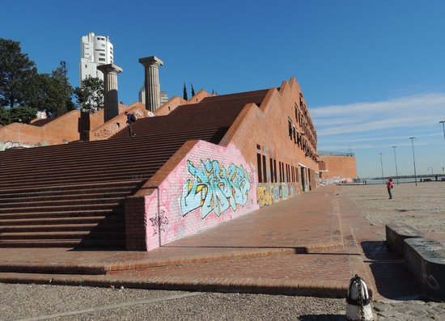
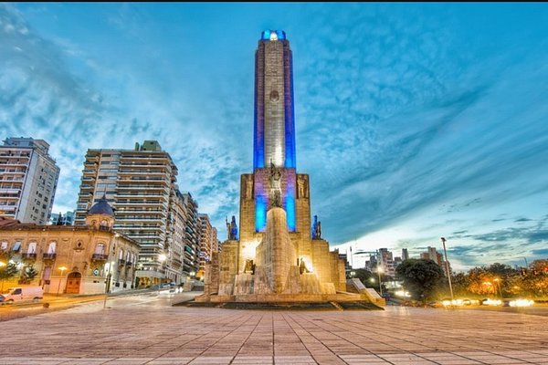
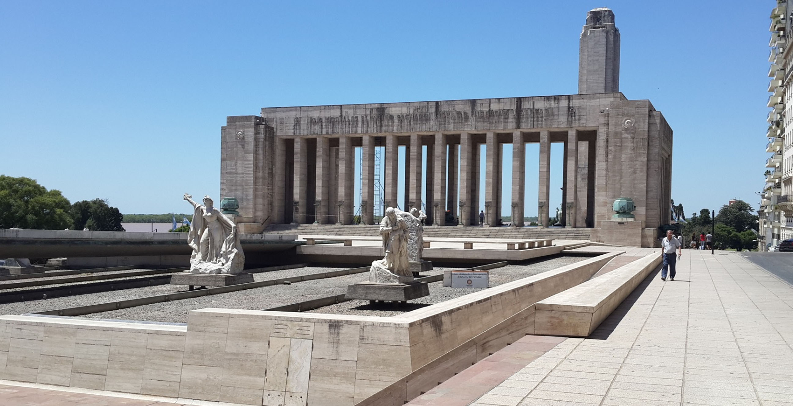
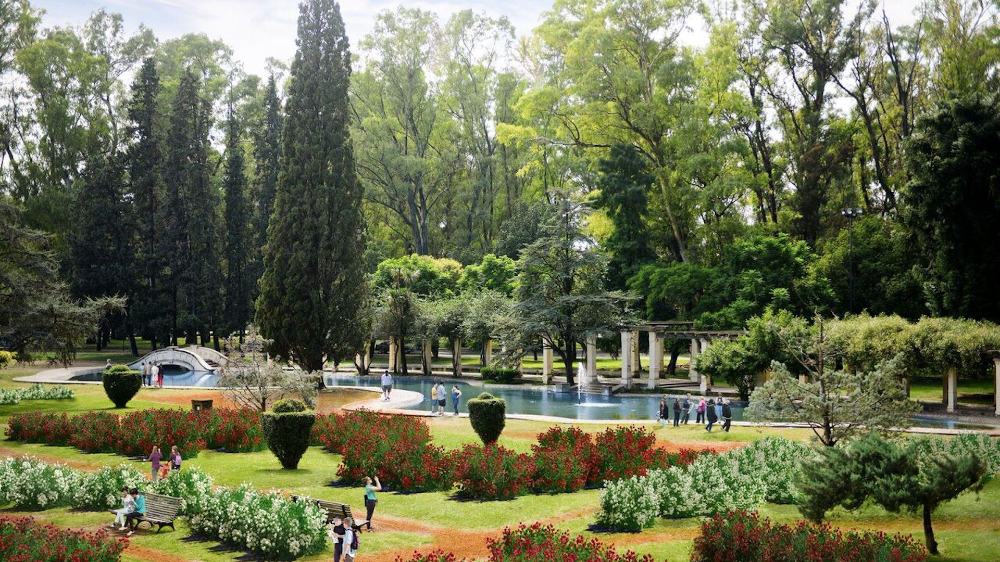
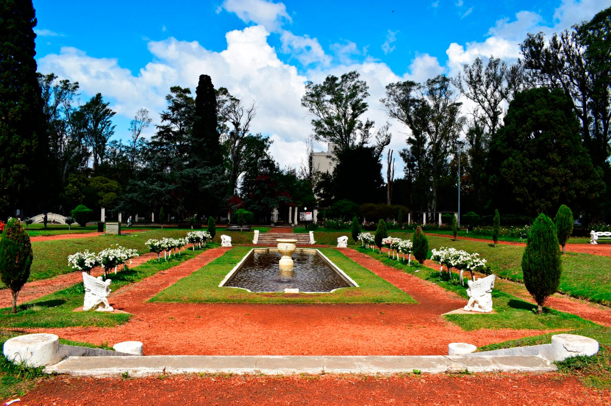
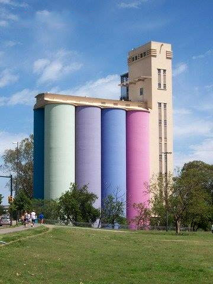
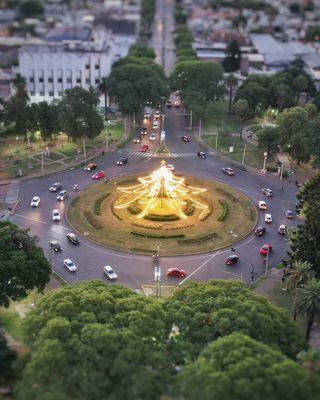
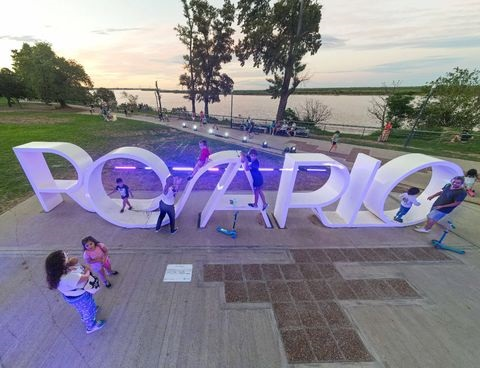
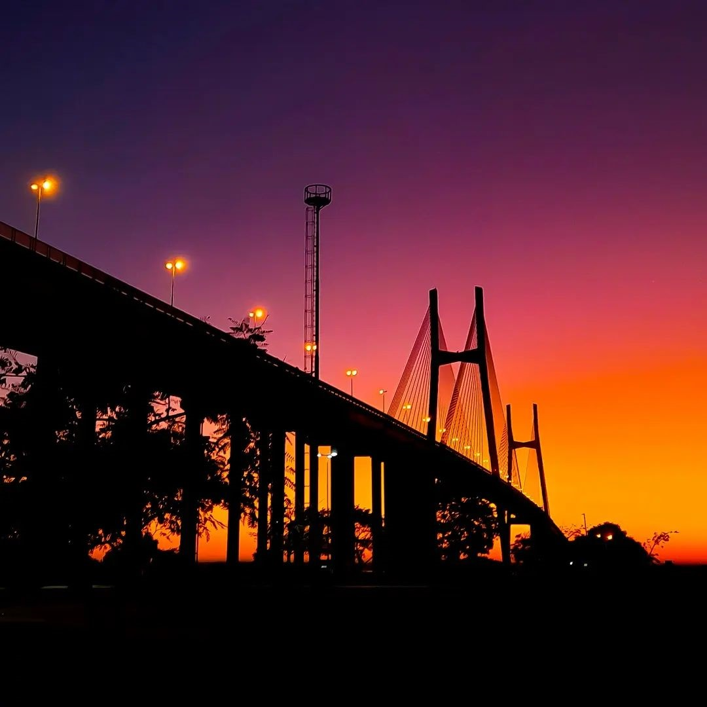

RosTourist
El turismo de Rosario¿Querés venir a conocer Rosario y no sabes por donde empezar? Acá te dejamos una guía turistica de todo lo que te podes llegar a encontrar en la ciudad
Rosario: La cuna de la bandera
Acá te mostramos algunas imagenes para enamorarte de la ciudad ♥








